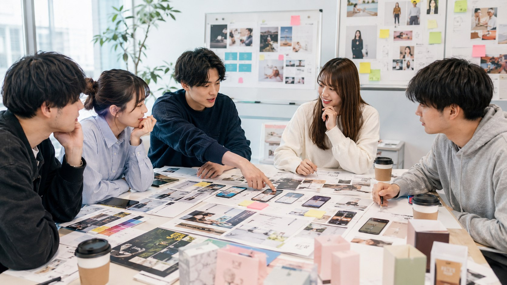

PROBLEM
こんな悩みありませんか？
採用ページを見ても
SNSを更新しても
反応がいまひとつ
商品の魅力が
若い世代に伝わりにくい
企業の良さの
見せ方に悩んでいる
企業の魅力が、若い世代にうまく届いていないケースは少なくありません。

APPROACH
未来の顧客から、
改善のヒントを
若手アントレ人材が、未来の顧客・仲間の視点で、採用・商品・広報の伝わり方をレビューします。
どこで興味が止まるのか
何が分かりにくいのか
どんな情報があると伝わりやすいのか
REVIEW
採用・商品・広報を、若手視点で見直す
SNS
投稿内容・見せ方・言葉選びの改善ポイントを提案します。
商品・サービス
若手が感じる魅力や、分かりにくい点を可視化します。
広報資料
伝わりやすい構成や訴求の見直しを提案します。
採用・企業紹介
若手に届きやすい言葉や切り口を整理します。
GOAL
伝えたい魅力が、伝わる発信へ
企業の本当の魅力を、若手に響く言葉と形へ翻訳します。
未来のファンや仲間につながる発信を一緒につくります。
発信や採用の悩みを相談しませんか？
対象となるページや資料に合わせてご案内します。
お問い合わせ